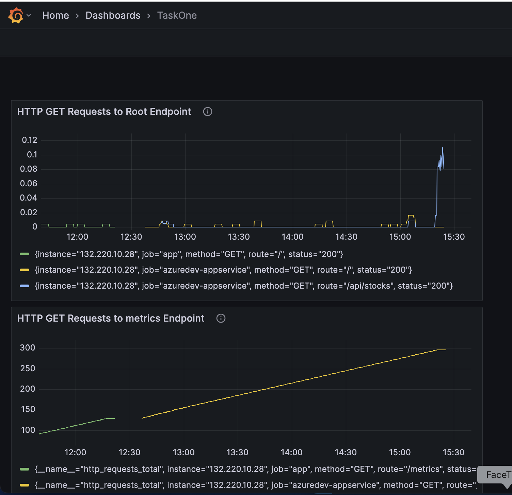
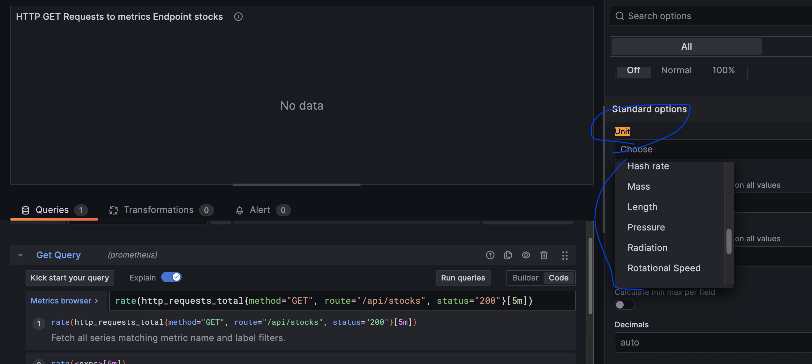

Surveillance des déploiements Azure : Prometheus et Grafana avec Ansible
01 Mai 2025
📊 Dans ce projet, j’ai amélioré mon déploiement sur Azure Kubernetes Service (AKS) en intégrant la surveillance avec Prometheus et Grafana, configurés via Ansible. Voici comment j’ai construit une solution de monitoring robuste pour mon application Node.js !
Aperçu du projet
Mon objectif était de surveiller mon application Node.js (`azuredev-appservice`) exécutée sur AKS, en suivant les taux de requêtes HTTP pour les endpoints comme `/`, `/api/stocks` et `/metrics`. J’ai utilisé Ansible pour automatiser l’installation de Prometheus et Grafana, configuré des métriques personnalisées et créé des tableaux de bord pour visualiser les données.
Étape 1 : Installation de Prometheus et Grafana avec Ansible
J’ai commencé par créer un playbook Ansible pour installer Prometheus et Grafana sur mon cluster AKS. Le playbook (`ansible/install_prometheus_grafana.yml`) a installé ces outils dans l’espace de noms `monitoring` en utilisant des charts Helm et a configuré Prometheus pour scraper l’endpoint `/metrics` de mon application.

Après avoir installé Ansible localement avec `brew install ansible`, j’ai exécuté le playbook :
ansible-playbook ansible/install_prometheus_grafana.ymlCela a configuré Prometheus et Grafana en tant que services LoadBalancer, les exposant via des IPs externes.
Étape 2 : Configuration des métriques dans l’application Node.js
Mon fichier `server.js` disposait déjà d’un endpoint `/metrics` utilisant la bibliothèque `prom-client` pour exposer des métriques personnalisées comme `http_requests_total`. J’ai vérifié que Prometheus était configuré pour scraper cet endpoint en ajoutant un job nommé `azuredev-appservice` dans le playbook Ansible :
- job_name: 'azuredev-appservice'
metrics_path: /metrics
scrape_timeout: 15s
static_configs:
- targets: ['132.220.10.28:80']
Étape 3 : Vérification des métriques dans Prometheus
J’ai accédé à l’interface de Prometheus à `http://128.251.236.207:9090` et vérifié dans **Status > Targets** que le job `azuredev-appservice` était "UP". J’ai ensuite interrogé `http_requests_total` pour voir les métriques de mes endpoints :
http_requests_total{job="azuredev-appservice", method="GET", route="/api/stocks", status="200"}
Les métriques étaient présentes, mais `/api/stocks` n’apparaissait pas initialement à cause d’un problème de barre oblique finale dans l’étiquette de route. J’ai corrigé cela en normalisant la route dans `server.js`.
Étape 4 : Création de tableaux de bord dans Grafana
J’ai accédé à Grafana à `http://128.251.236.208:3000` en utilisant les identifiants admin (`admin/admin123`). J’ai créé un nouveau tableau de bord nommé "TaskOne" et ajouté des panneaux pour surveiller les taux de requêtes HTTP :
rate(http_requests_total{job="azuredev-appservice", method="GET", route="/api/stocks", status="200"}[5m])
J’ai également importé un tableau de bord préconfiguré en utilisant un modèle JSON pour visualiser d’autres métriques comme `/` et `/metrics`.
Défi 1 : Métriques manquantes pour `/api/stocks`
Initialement, les métriques de `/api/stocks` manquaient car l’endpoint échouait à cause de problèmes avec la bibliothèque `yahoo-finance2`. J’ai ajouté une gestion des erreurs dans `server.js` pour m’assurer que l’endpoint renvoie toujours un statut `200`, même si certaines données boursières échouaient à être récupérées.

Défi 2 : Barre oblique finale dans les étiquettes de route
L’étiquette `route` pour `/api/stocks` incluait parfois une barre oblique finale (`/api/stocks/`), ce qui faisait que la requête Grafana ne la détectait pas. J’ai mis à jour la requête pour utiliser une expression régulière (`route=~"/api/stocks.*"`) et normalisé la route dans le middleware de l’application.
Vérification
Après avoir généré du trafic avec `curl`, le tableau de bord Grafana affichait les taux de requêtes pour tous les endpoints. Le tableau de bord "NodeJS Application Dashboard" offrait également des informations sur l’utilisation du CPU, la mémoire et le décalage de la boucle d’événements, confirmant la santé de l’application.
for i in {1..20}; do curl --connect-timeout 20 http://132.220.10.28/api/stocks; sleep 1; doneLeçons apprises
- Ansible simplifie la configuration d’outils de surveillance comme Prometheus et Grafana.
- Les métriques personnalisées nécessitent une gestion minutieuse des étiquettes—attention aux incohérences comme les barres obliques finales.
- Les tableaux de bord préconfigurés (par exemple, NodeJS Application Dashboard) sont excellents pour obtenir rapidement des informations sur les performances de l’application.
- Générez toujours du trafic pour tester les métriques et les tableaux de bord après la configuration.
Cette configuration de surveillance m’a offert des informations précieuses sur les performances de mon application. J’ai hâte d’explorer des requêtes Prometheus plus avancées et des visualisations Grafana dans de futurs projets ! Partagez vos astuces de surveillance ci-dessous !
Hashtags :
Partagez cet article :